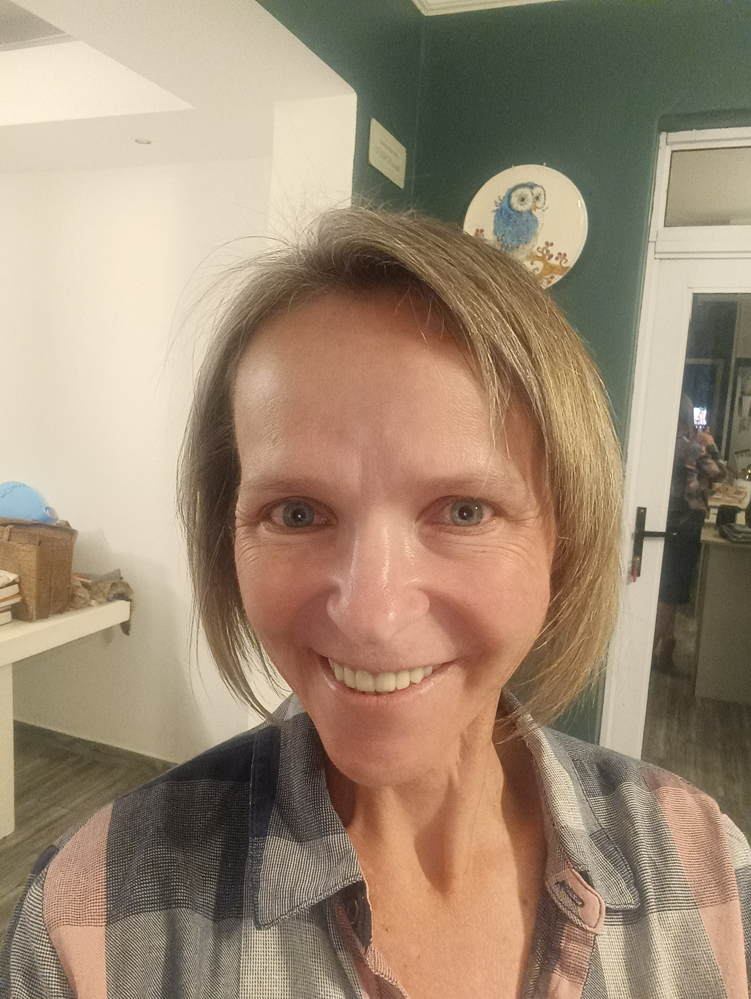

We use only natural, skin-loving ingredients with tallow as our main and most natural ingredient, along with olive oil, coconut oil, shea butter, and pure essential oils. No synthetic fragrances, harsh chemicals, or unnecessary additives.
About Dear Lilian
Our Story
My journey into natural living began with my husband's celiac diagnosis, which spurred me to find healthier alternatives. After leaving my 23-year career in education to dedicate more time to my daughter, I delved into crafting natural beauty and cleaning products.
Starting with tallow soap (boerseep) for laundry, I was amazed by its effectiveness. This led me to experiment with bath soaps, facial creams, serums, body butters, and hand creams. It's been an incredible and ongoing adventure.
My name is Deidrè Bosch, a mother and wife grateful for my loving family. Based in Johannesburg, I craft each bar by hand using time-honored cold-process methods that preserve the natural goodness of our ingredients.
Our Values
Sustainable Practices
From our recycled paper packaging to our commitment to minimal waste, we're dedicated to reducing our environmental footprint. We offer refill options and encourage customers to recycle.
Every batch is made with care and attention to detail. Our cold-process method takes longer, but it produces a superior soap that's gentle on skin and full of natural glycerin.
Join Our Journey
We're constantly learning and growing. Thank you for supporting small-batch, sustainable soap making.
Shop Our Soaps